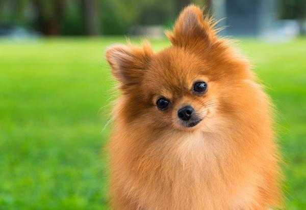
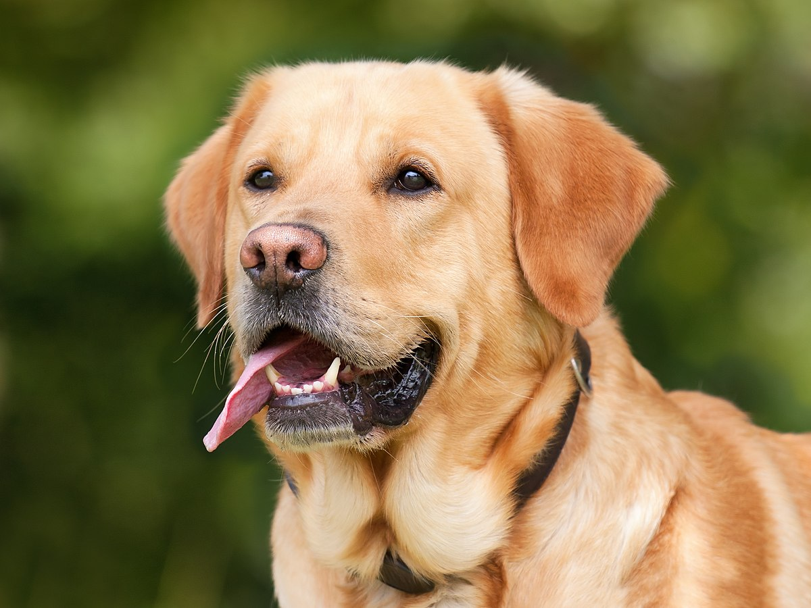

Top 10 razas de perro más bonitos
- Pomerania
- Samoyedo
- Labrador Retriever
- Husky Siberanio
- Chow Chow
- Terranova
- Carlino o Pug
- Shih tzu
- Galgo
- Rough Collie
A continuación, te hablaremos sobre las primeros tres razas de perros más bonitas
Pomerania
Origen
Los antepasados del pomerania eran perros de trineo en Islandia y Laponia, que llegaron a Europa a través de Pomerania. La región de Pomerania, bañada al norte por el mar Báltico y limitada al oeste por la isla de Rügen y al este por el Río Vístula, ha sido ocupada por muchos pueblos: celtas, eslavos, polacos, suecos, daneses y prusianos. Su nombre procede de Pomore o Pommern, lo que significa "junto al mar", y le fue dado en tiempos de Carlomagno. Es en Pomerania donde el Spitz ganó fama como mascota y perro de labor.
Historia
Los criadores caninos mejoraron el pelaje y adaptaron al perro a la vida urbana, pero los pomerania pesaban más de 10 kg al llegar a Inglaterra.Se atribuye a los criadores la reducción de talla del animal y el desarrollo de su variedad de colores, siguiendo métodos de prueba y error y aplicando las teorías genéticas de Gregor Mendel. El pomerania actual es pequeño debido a la crianza selectiva, pero conserva la robustez y el pelaje típicos de los perros de climas fríos. Fue la reina de Inglaterra Carlota de Mecklemburgo-Strelitz quien introdujo al pomerania entre la nobleza de su país, pero la raza solo alcanzó fama internacional cuando su nieta Victoria volvió de unas vacaciones en Florencia, Italia, con un pomeranio llamado Marco.
Samoyedo
Historia
El samoyedo toma su nombre de una etnia que, después de la revolución rusa de 1917, cambió su nombre por nénets. Distintos exploradores del Ártico (por ejemplo Fridtjof Nansen y Roald Amundsen) llevaron distintos ejemplares a Europa y mantuvieron el nombre de samoyedo para establecer criaderos, tanto en Europa como en Estados Unidos. Fridtjof Nansen creía que el uso de perros de arrastre era la única manera efectiva de explorar el norte y utilizó samoyedos en sus expediciones polares. Desafortunadamente, su plan fue desastroso para los animales, planeando alimentar a los perros más fuertes con los perros más débiles a medida que se fueran muriendo durante la expedición. Al final, perdió a casi todos los perros. Roald Amundsen usó un grupo de perros liderado por un samoyedo de nombre Etah en la primera expedición que alcanzó el polo sur.Análisis recientes de ADN llevaron a que sea reconocido dentro de las catorce razas de perros más antiguas, junto con el husky siberiano, el alaskan malamute, el chow chow y otras once. Ha sido criado y entrenado durante los últimos 3000 años.
Labrador Retriever
Historia
Los antepasados del labrador actual se originaron en la isla de Terranova, ahora parte de la provincia de Terranova y Labrador, Canadá. El precursor de la raza de Labrador fue el perro de aguas de San Juan, una raza que surgió a través de la cría hecha por los primeros colonos de la isla en el siglo xvi. Los antepasados de los perros de San Juan no se conocen, pero probablemente fueron una mezcla aleatoria de razas de trabajo inglesas, irlandesas y portuguesas. Durante el siglo xix un buen número de perros de San Juan fueron llevados a la región de Poole en Inglaterra, en ese entonces uno de los centros de comercio pescadero para la alta burguesía, donde estos animales llegaron a ser apreciados como perros de caza y recobre de aves en agua. Unos pocos criaderos en Inglaterra comenzaron a reproducirlos, al mismo tiempo, en la isla de Terranova una combinación de políticas proteccionistas de la cría de ovejas que llevó a subir de manera exorbitante los impuestos de los propietarios de perros, aunado a la cuarentena por rabia en Inglaterra que impidió la repatriación de los perros, llevó a la desaparición gradual y consecuente extinción del perro de San Juan en su país de origen, Canadá
A continuación, te mostraremos una tabla que es de aydua para saber cuantos años tendría tu perro si fuera en edad de humano, dependiendo también del tamaño del perro
Tabla de edad de perros
| Tamaño del perro | Edad del perro | Edad humana equivalente |
|---|---|---|
| Pequeño | 0-2 años | 0-24 años |
| Mediano | 2-7 años | 24-56 años |
| Grande | 7 años en adelante | 56 años en adelante |
¡Si te interesa conocer datos curiosos sobre los perros, ¡visita esta página haciendo click! Datos curiosos
Siempre es importante darle un buen nombre a nuestros perritos, pues es como les llamaremos el resto de su vida, y por lo tanto tiene que ser un nombre que describa bien a nuestro perrito, y el problema de todo esto, es que muchas veces necesitamos ayuda para pensar cuál nombre sería el adecuado para nuestra mascota, teniendo en cuenta lo anterior, puedes visitar la siguiente página, la cual está llena de ideas para nombrar a tu perrito, ¡visítala! Nombres para perros
Ir a inicio